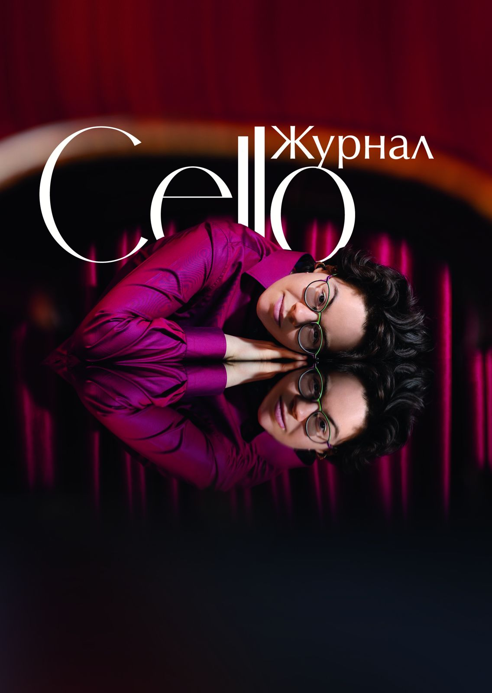
журнал для виолончелистов и всех, кто любит виолончельное искусство
Мария Зайцева
«Я буду делать то, что меня развлекает»
Приветствие
Всероссийская виолончельная академия представляет свой новый проект: журнал для виолончелистов и всех, кто любит виолончельное искусство.
За удивительно короткий срок Академия от небольшого форума с концертами, мастерклассами и творческими встречами превратилась в настоящую виолончельную «страну», где виолончелисты любого возраста, статуса и национальности чувствуют причастность к большому и искренне-благожелательному сообществу, могут проявить себя в разных ипостасях, получить высокопрофессиональные рекомендации и просто пообщаться с коллегами.
Читать письмо полностью · Т.А. Лукашина
В номере
16 материалов · 52 страницыЛюди
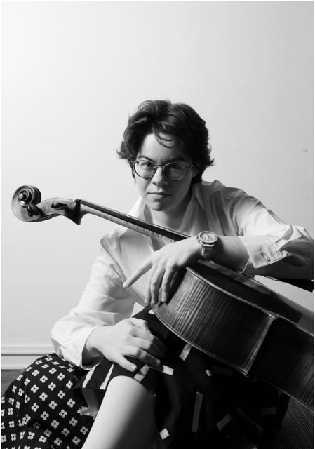
Мария Зайцева: «Я буду делать то, что меня развлекает»
Лауреат VI премии конкурса королевы Елизаветы о неделе в изоляции, дуэте с мамой и о том, что такое успех
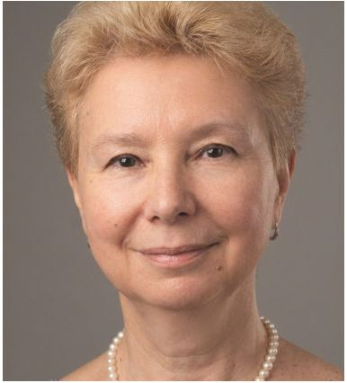
Интервью с Марией Юрьевной Журавлёвой
Педагог ЦМШ о возрасте начала занятий, конкурсах и сценическом волнении
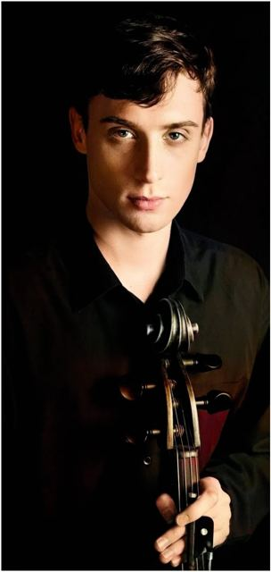
Советы мастера: Александр Щетина
Виолончелист и скрипичный мастер о выборе инструмента, струнах, канифоли и уходе за виолончелью
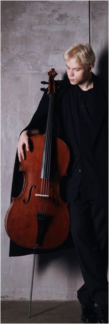
Богдан Ефремов
Молодые звёзды Всероссийской виолончельной академии
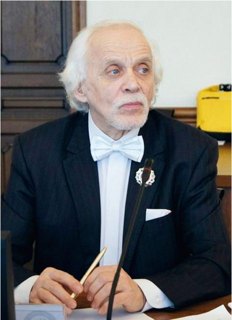
Александр Россинский. Жизнь, посвящённая музыке
Авторская рубрика Анастасии Ушаковой. Алтайская виолончельная школа и ученик Г.И. Пеккера
История
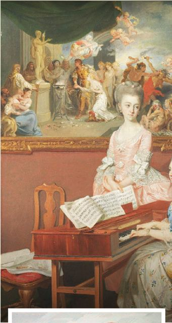
История виолончельного искусства
Фидель, смычковые лиры и виолы: откуда пришла виолончель
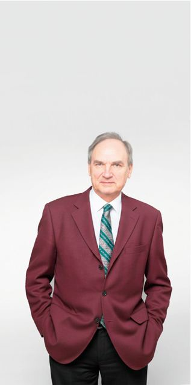
К 95-летию со дня рождения А.П. Никитина
Солист, концертмейстер, педагог и основатель ансамбля виолончелистов Ленинградской филармонии
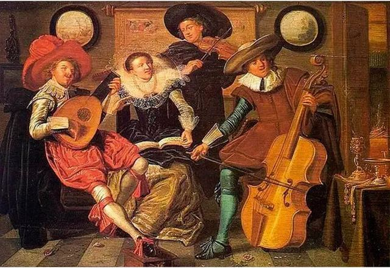
Исторически информированное исполнительство
Что такое HIP, как он возник и кого слушать, куда сходить и что почитать
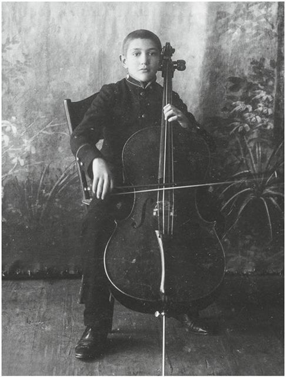
Г. Пятигорский. «Виолончелист»
Автобиография великого виолончелиста. Глава первая
Практика
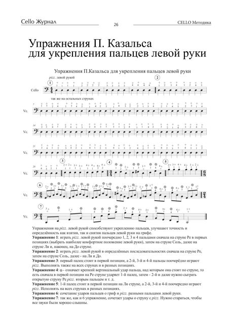
Упражнения П. Казальса для укрепления пальцев левой руки
Семь упражнений на pizzicato левой рукой
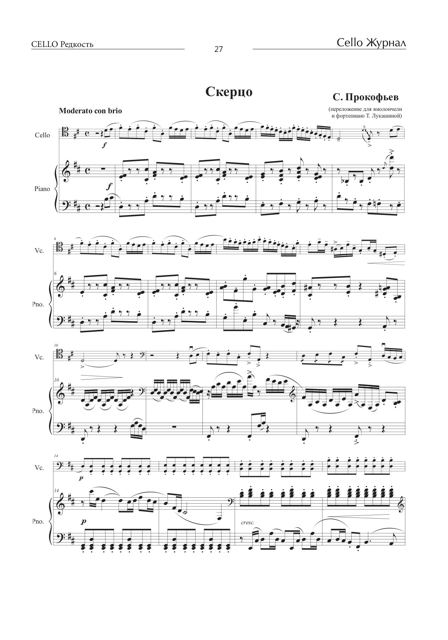
С. Прокофьев. Скерцо для виолончели и фортепиано
Переложение для виолончели и фортепиано Т. Лукашиной. Полная партитура
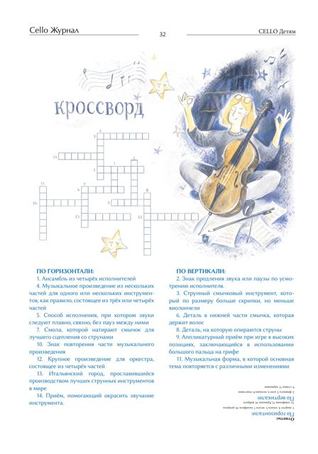
Кроссворд
Четырнадцать вопросов о музыке и виолончели
Хроника
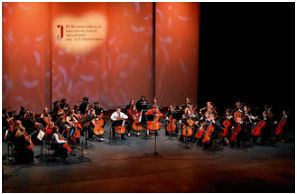
Сезон 2025/2026
Итоги сезона: IV Академия имени А.П. Никитина, «Музыкальные портреты», «Новая школа», 35 концертов
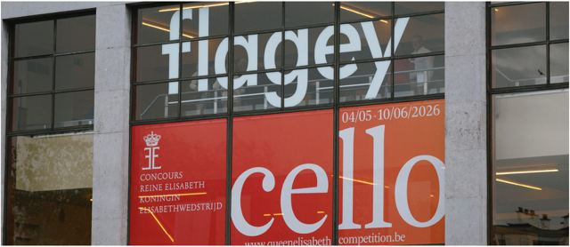
Конкурс королевы Елизаветы 2026
Бельгия, Брюссель, 4 мая – 10 июня 2026 года. Впервые в финале виолончелисты из России
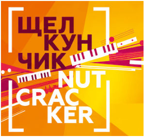
Фестивали, конкурсы, концерты
Конкурсы, фестивали и концерты осени 2026 года
Фотохроника
Задняя обложка · фото Владимира Волкова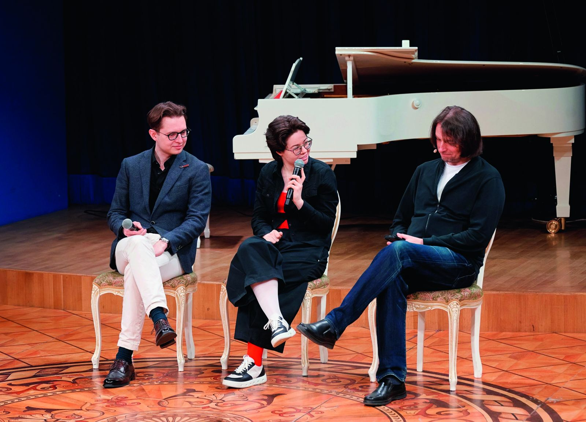
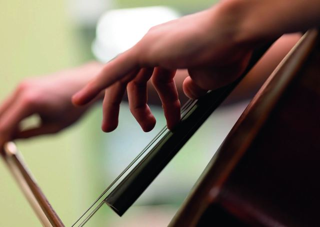
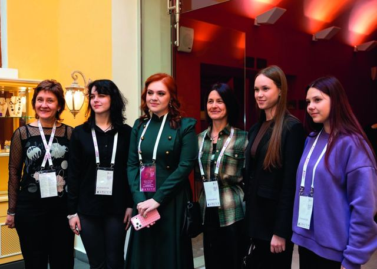
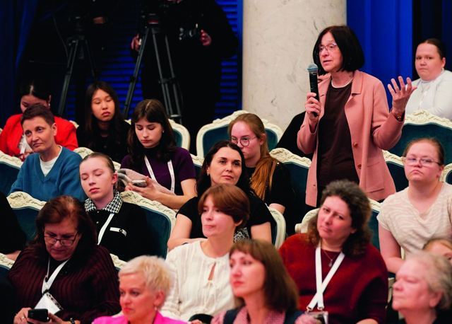
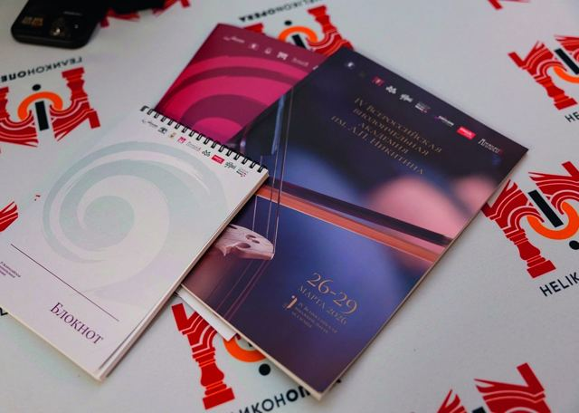
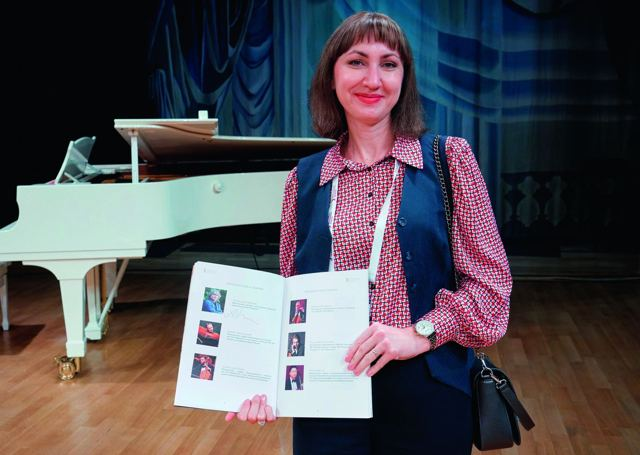
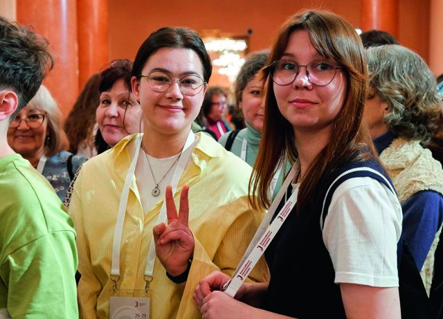
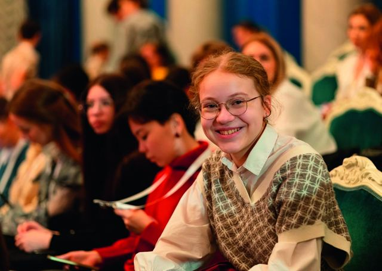
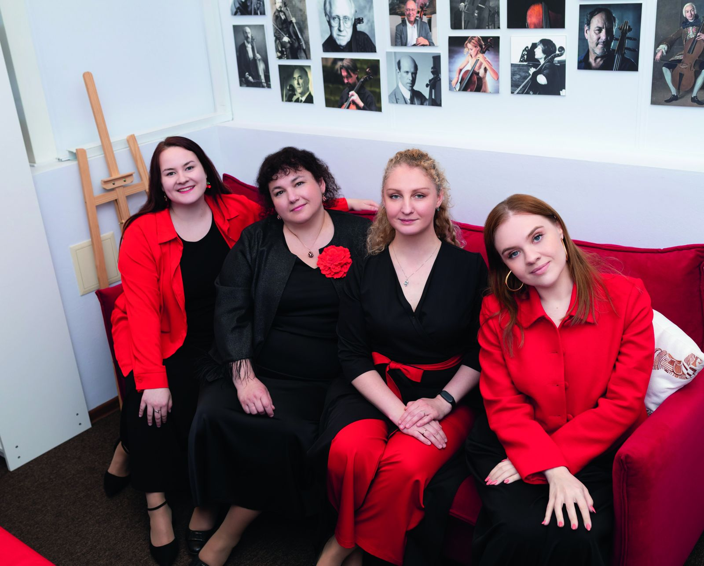
«Всероссийская виолончельная академия в Казани»
РОО «Союз композиторов Республики Татарстан»
Казань, улица Лобачевского, дом 10
концерт в 19:00
- Исполнители
- Олег Бугаев (виолончель)
Мария Зайцева (виолончель)
Мария Зайцева (фортепиано) - Мастер-классы
- 27.09 · 11:00–14:00
28.09 · 10:00–14:00 - Номер для регистрации
- +7 960 032-54-54
WhatsApp, MAX
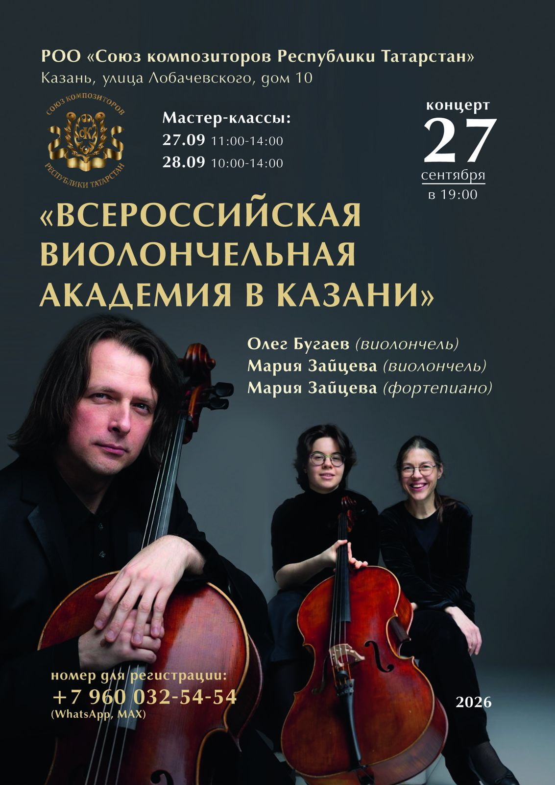